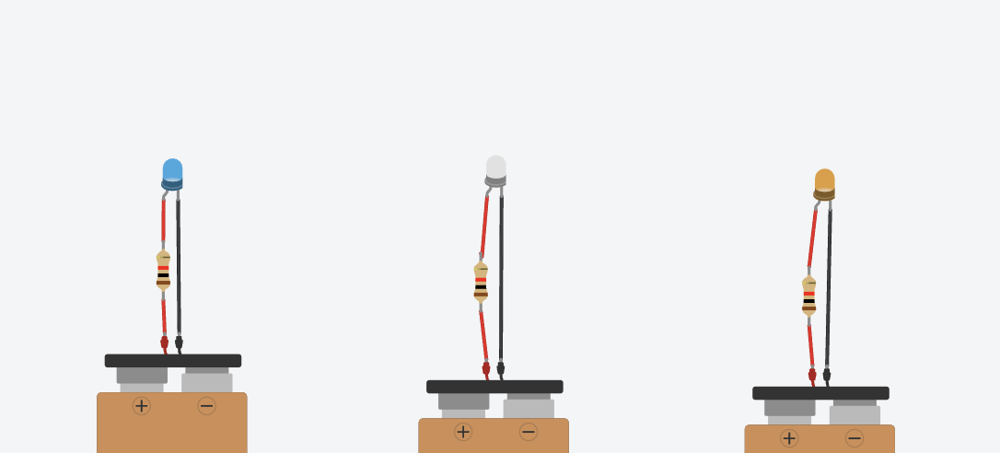
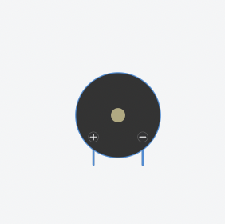

Extend Yourself - Tinkercad Circuits: Create a Stoplight
 Change Colors
Change Colors
Create another LED circuit with different colors and adjust the time that each light is illuminated.

Add a Buzzer or Switch
Try adding a buzzer or a switch into your stoplight circuit.
|  |